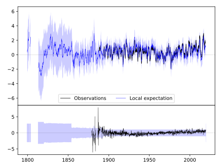
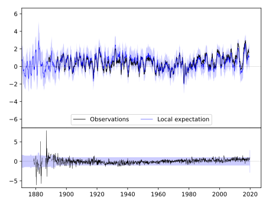
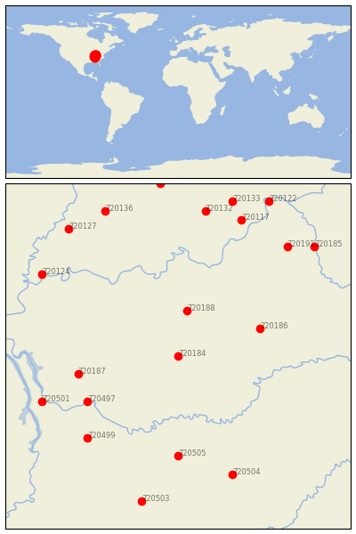

BOWLING GREEN RGNL A [USA]


| Neighbour | Name | Country | Distance | Lon/Lat | Years |
|---|
| 720184 | BOWLING GREEN RGNL A | USA | 0 | -86.4, 37.0 | 1878-2019 |
| 720188 | LEITCHFIELD 2 N | USA | 56 | -86.3, 37.5 | 1893-2019 |
| 720186 | GREENSBURG | USA | 86 | -85.5, 37.3 | 1890-2019 |
| 720187 | HOPKINSVILLE | USA | 100 | -87.5, 36.8 | 1893-2019 |
| 720497 | CLARKSVILLE WWTP | USA | 104 | -87.4, 36.5 | 1854-2019 |
| 720505 | MURFREESBORO 5 N | USA | 122 | -86.4, 35.9 | 1883-2019 |
| 720499 | DICKSON | USA | 134 | -87.4, 36.1 | 1885-2019 |
| 720501 | DOVER 1 W | USA | 144 | -87.9, 36.5 | 1893-2019 |
| 720504 | MC MINNVILLE | USA | 154 | -85.8, 35.7 | 1872-2019 |
| 720124 | MT VERNON | USA | 165 | -87.9, 37.9 | 1887-2019 |
| 720191 | SHELBYVILLE 1 E | USA | 170 | -85.2, 38.2 | 1888-2019 |
| 720117 | CHARLESTOWN 5 NNW | USA | 177 | -85.7, 38.5 | 1893-2019 |
| 720132 | SALEM | USA | 179 | -86.1, 38.6 | 1884-2019 |
| 720503 | LEWISBURG EXP STN | USA | 181 | -86.8, 35.4 | 1888-2019 |
| 720185 | FRANKFORT DOWNTOWN | USA | 187 | -84.9, 38.2 | 1893-2019 |
| 720127 | PRINCETON 1 W | USA | 188 | -87.6, 38.4 | 1884-2019 |
| 720136 | WASHINGTON 1 W | USA | 191 | -87.2, 38.6 | 1893-2019 |
| 720133 | SCOTTSBURG | USA | 196 | -85.8, 38.7 | 1893-2019 |
| 720122 | MADISON SEWAGE PLT | USA | 208 | -85.4, 38.7 | 1854-2019 |
| 720125 | OOLITIC PURDUE EX FR | USA | 211 | -86.6, 38.9 | 1893-2019 |